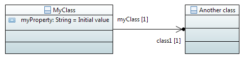
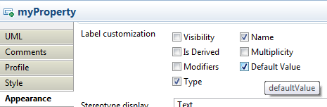
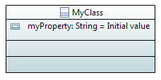

The standard UML specification provides a few hints to represent graphical elements. However, it only focuses on the general representation of these elements (e.g. A Class is a rectangle, with optional compartments for its attributes and operations, and its name should be displayed in italic if the Class is abstract).
Nevertheless, for a better readability (and even esthetic), the user has a certain freedom for changing some graphical properties, such as an Element's color. Until now, in Papyrus, this customization could be done by two complement means:
While this allows defining a custom theme for our diagrams, this mechanism suffers from a few limitations:
The Cascading StyleSheets (CSS) component adds the capacity to define some Stylesheets for your diagrams. Just like in web pages, the CSS format is used to separate the contents of our diagrams from their appearance. It becomes possible to change the appearance of a whole diagram, or even a set of diagrams, independently of the number of represented elements, in a single click.
The CSS Stylesheet support is now shipped in the base installation of Papyrus. It doesn't require any specific installation step anymore.
Without the CSS component, or with the "Black & White" CSS Theme, your diagrams look like:
With the default "Papyrus" CSS Theme, your diagrams look like:

Note: If you opened a diagram which has been created without the CSS Support, it may still have a user-defined appearance, e.g. without Element icons. This might or might not be a problem, as this may conflict with the CSS Theme. You can reset all custom appearances by pressing the "Default style" button in the Style tab of the Diagram's properties view.
To define a custom style, the first step is to create a Stylesheet. The creation is really straightforward: a Stylesheet is a text file with the .css extension. You can create such a file using the "New > File" wizard.
There are several options for using stylesheets.
You can define a particular style for a diagram.

Similarily to "Diagram Stylesheet" you can define a particular style for a Model.
You can associate to a project specific stylesheets.
Once you have defined your style sheets, you may want to export it to create a new theme (Or to extend an existing theme). To do so, Papyrus provides two ways to define a theme.
Papyrus provides an extension point: org.eclipse.papyrus.infra.gmfdiag.css.theme.
This extension point needs two entries: a Theme Definition (ID, Label and icon of the Theme), and Theme contributions (A set of style sheets which will compose the Theme). More than one plug-in can contribute to the same Theme, which makes it possible to extend a Theme.
The Theme can be modified from the Papyrus preferences page "CSS Theme". Only one theme can be activated at the same time. A Theme applies to all Papyrus Diagrams from the workspace.
You can define theme in workspace preferences. A theme is defined by style sheets.
You can edit or create a theme with a selection of CSS files in Project Explorer view. For this, select the CSS files, right click and select "CSS Theme"
Papyrus Stylesheets are stored in text files with the ".css" extension (e.g. stylesheet.css).
The CSS syntax is a list of rules, which associates selectors and properties.
Eclipse implements the 2.1 version of the CSS syntax. The available selectors are:
These selectors can be combined using one of the following combinators:
A rule also contains a list of properties, in the form property:value;
In Papyrus, the selectors apply to semantic elements and properties (i.e. UML Elements), and the properties apply to the appearance properties (i.e. GMF Appearance properties). A few custom properties (Independent from the GMF Appearance model) are also available (See "Supported properties" below).
* {
fillColor: red;
fontColor: #0000FF;
}
Meaning: all elements should be filled in red, and all texts should be blue (RGB Color #0000FF)
Class {
gradient: white vertical;
elementIcon:true;
shadow:true;
qualifiedNameDepth:full;
}
Meaning: this style applies to all UML Classes. They will have a white and vertical gradient. The Element icon and the shadow will be displayed, as well as their fully qualified name.
ClassDiagram Class>Property {
fontColor: red;
}
Meaning: The properties directly contained in a Class, which is drawn on a ClassDiagram (Either as a root element of the diagram, or in a Package) will be displayed in red.
[appliedStereotypes~="Block"]{
bold:true;
}
/* Equivalent: qualified name */
[appliedStereotypes~="SysML::Blocks::Block"]{
bold:true;
}
Meaning: The elements with the "Block" stereotype must be displayed in bold.
[appliedStereotypes~=Block][isEncapsulated=true]{
fontColor:red;
}
Meaning: The elements with the "Block" stereotype, and the stereotype property "isEncapsulated" set to true, must be displayed in red.
All these rules can be combined:
Class[appliedStereotypes~=Block][appliedStereotypes~=MyCustomStereotype][isEncapsulated=true][myCustomProperty=SomeValue][isAbstract=false]{
/* A class on which the stereotypes "Block" and "MyCustomStereotype" are applied,
* and on which the stereotype property "isEncapsulated" is set to true,
* the stereotype property "myCustomProperty" is set to "SomeValue", and
* the UML Property "isAbstract" is set to false */
fillColor:red;
}
Papyrus also provides a tool to generate a CSS Rule from an element displayed in the diagram. You need to create a stylesheet before you can edit it with the Create style tool, and it is recommended (Although not required) to associate this style sheet with your current diagram.
To use it, create an element and change its appearance via the "Appearance" tab of the properties view. Then, right click on the element, and select "Format", "Create a new style". The dialog box contains three tabs:

In the Stylesheet tab, select your stylesheet:
In the conditions tab, there are three groups of options:
The properties tab contains all the graphical properties that can be applied to the selected object. It is used to choose the graphical properties to apply on the objects matching the conditions.
Selector properties are semantic element properties. They can be used with one of the following syntaxes:
[isAbstract=true]
Class[isAbstract=true]
The supported semantic element properties are:
The supported properties are the semantic properties of the UML element (e.g. isAbstract, name, type, ...), as well as the semantic properties of the stereotypes applied to the UML element (e.g. isEncapsulated for a SysML Block)
Some selectors can also be used to represent some specific parts of an element. For example, it is possible to hide a specific compartment:
Class > Compartment[kind="attribute"] {
visible:false;
}
Class > Compartment[kind="symbol"] {
visible:true;
}
Compartment[kind="structure"]{
collapsed:true;
}
Port > Label {
visible: false;
}
Style properties are graphical properties supported by the display. Note that some graphical elements may not support some specific properties (Either because they shouldn't support them, or because they are not yet implemented). For example, a UML::Class will not support the italic property, because in UML, italic means abstract.
The CSS Supports all GMF Notation properties, as well as a few Papyrus-specific properties. This chapter will only list all the Papyrus-specific properties.
The simplest way to discover new style properties is to use the Appearance tab of the Properties view in Papyrus. When hovering one of the appearance properties, the tooltip indicates the name of the corresponding CSS property

This table lists the most common properties:
| Property name | Value type | Initial Value | Applies to | Comment |
|---|---|---|---|---|
| fillColor | Color | white | Shapes | In the default "Papyrus Theme", the fill color depends on the type of element. The used colors are #C3D1D5 (Light blue, Default), #C3D7DD (Lighter blue, Class), #FFFFCC (Yellow, Comment), #C8FFE6 (Teal, Constraints) |
| transparency | integer | 0 | Shapes | Value is a percentage: values in the range (0, 100) are supported. Transparency works only if the gradient is activated: Bug 419320 |
| gradient | [Color Color [ horizontal | vertical ] | none] | none | Shapes | Examples: "white blue horizontal" or "none" |
| fontColor | Color | black | Shapes, floating labels | Comments support HTML syntax. Most style-properties have no effect on comments |
| fontName | String | "Segoe UI" | Shapes, floating labels | Most fonts are platform-specific. The list of available Fonts can be found in the "Appearance" tab of the properties view |
| fontSize | integer | 9 | Shapes, floating labels | |
| bold | boolean | false | Shapes, floating labels | |
| italic | boolean | false | Shapes, floating labels | In UML, "italic" means "isAbstract=true". This property is disabled for all elements which can be abstract (e.g. Class) |
| underline | boolean | false | Shapes, floating labels | In UML, "underline" means "isStatic=true". This property is disabled for all elements which can be static (e.g. Property) |
| strikeThrough | boolean | false | Shapes, floating labels | |
| visible | boolean | true | All elements | Although this property will work for any diagram elements, it is probably a bad idea to use it with anything else than a Compartment or a Label |
| collapsed | boolean | false | Compartments | |
| showTitle | boolean | false | Compartments | |
| lineColor | Color | black | Shapes, Connectors | |
| lineWidth | integer | -1 | Shapes, Connectors | -1 means "default", and typically corresponds to 1px |
| routing | [Manual | Rectilinear | Tree] | Manual | Connectors | The value is case-sensitive: don't forget the initial Capital |
| roundedBendpointsRadius | integer | 0 | Connectors | Applies to connectors with routingStyle = Rectilinear or Tree |
| smoothness | [None | Normal | Less | More] | None | Connectors | |
| avoidObstructions | boolean | false | Connectors | |
| closestDistance | boolean | false | Connectors | |
| jumpLinkStatus | [None | All | Below | Above] | None | Connectors | It is not recommended to use jump links via CSS, as it gives strange results for overlapping connectors |
| jumpLinkType | [Semicircle | Square | Chamfered] | Semicircle | Connectors | |
| jumpLinkReverse | boolean | false | Connectors | |
| leftMarginLabel | integer | 0 | Labels | Define the left margin of the label in pixel. This is the space between the text box and his container |
| topMarginLabel | integer | 0 | Labels | Define the top margin of the label in pixel. This is the space between the text box and his container |
| rightMarginLabel | integer | 0 | Labels | Define the right margin of the label in pixel. This is the space between the text box and his container |
| bottomMarginLabel | integer | 0 | Labels | Define the bottom margin of the label in pixel. This is the space between the text box and his container |
The following properties can be used to bypass the standard UML notation. They can typically be used for pure DSML notations:
| Property name | Value type | Initial Value | Applies to | Comment |
|---|---|---|---|---|
| displayBorder | boolean | true | Shapes | If set to false, the borders of the Shape will be hidden. |
| displayName | boolean | true | Shapes | If set to false, the name of the Shape will be hidden |
| displayTag | boolean | true | Shapes, connectors | If set to false, the tags (e.g. « component ») of the element will be hidden |
| maintainSymbolRatio | boolean | true | Shapes | If the shape is represented with a Symbol, specifies whether the ratio should be maintained or not. If the Symbol is displayed in a compartment, it is usually a good idea to maintain the ratio. If the symbol is the only representation (e.g. when the name, border and compartments are hidden), it is recommended to not maintain the ratio |
| elementIcon | boolean | false | Shapes, floating labels | Whether the icon should be displayed next to the label of the element. In the default "Papyrus Theme", the icon is displayed by default |
| shadow | boolean | false | Shapes | Display a shadow under the shape |
| qualifiedNameDepth | [full | none | integer] | none | Shapes, floating labels | The depth of the qualified name to display. Applies to UML::NamedElement |
| lineStyle | [solid | dashed | dotted | hidden | double] | N/A | Connectors | In UML, the line type depends on the semantic element (e.g. solid line for associations, dashed line for dependencies...). In most cases, you should avoid using this property, as this would change the well-known UML notation. However, it can be useful for creating pure DSML, where the UML notation should be hidden. |
| lineDashLength | integer | N/A | Connectors | When the lineStyle is set to "Dash", specifies the length of the dash |
| lineDashGap | integer | N/A | Connectors | When the lineStyle is set to "Dash", specifies the gap between the dashes |
| targetDecoration | [none] | N/A | Connectors | If "targetDecoration" is set to None, hides the target decoration of the Connector (e.g. the arrow) |
| sourceDecoration | [none] | N/A | Connectors | If "sourceDecoration" is set to None, hides the source decoration of the Connector (e.g. the arrow) |
| maskLabel | string[] | N/A | Labels, floating labels | This property can be used to configure the display of complex labels (e.g. properties). See examples in the Mask Label chapter below |
| svgFile | path | N/A | Shapes | The path to an SVG file, which should be used as a symbol for the element. It will be displayed in the "symbol" compartment of the shape |
| followSVGSymbol | boolean | false | Shapes | If the SVG file has a path with the ID "papyrusPath", this path will be used to connect edges |
| svgCssFile | path | N/A | Shapes | The path to a CSS file which will be applied to the SVG symbol (If an SVG symbol is used). Can be used to dynamically change the appearance of the SVG image (e.g. change color, ...) |
| svgCssClass | string | N/A | Shapes | The CSS Class to be applied at the root of the SVG document (If an SVG symbol is used). Can be used to dynamically change the appearance of the SVG image |
| textAlignment | string | left/center | Floating labels | Set the text alignment of the label. (left, center, right) |
| labelConstrained | boolean | false | Labels of Port | Constraint the label, it will be automatic positioned at the proper position according to the position of the Port on its parents. The label can't be moved. |
| labelOffsetX | integer | 0 | Labels of Port | Set the offset on X when label is constrained |
| labelOffsetY | integer | 0 | Labels of Port | Set the offset on Y when label is constrained |
String: Simple (Ascii) strings can be written without quotes: property:value. Complex strings must be written with quotes: property: "my value"; path: "platform:/plugin/my.example.plugin/resources/myFile.ext";
Integer: Quotes are optional: size: 18
Boolean: Quotes are optional: bold: true
Color: There are three ways for using colors. The simplest one is to use the list of predefined CSS Color names: fillColor: teal. It is also possible to use the Hexadecimal RGB notation: fillColor: #008080. The last option is to use the rgb() function: fillColor: rgb(0, 128, 128)
Some labels can be configured with a "Mask": in the appearance tab of the properties view, some elements have a list of checkboxes which are used to select which parts of the label should be displayed (e.g. visibility, type, name, multiplicity...)
The CSS property "maskLabel" has the same purpose. The value of this property is the list of labels to display. For example, if you want to display only the name of the Ports, write:
/* Broken in Papyrus 1.0.0 (See Erratum below) */
Port > Label {
maskLabel: name;
}
/* Works in Papyrus 1.0.0 (See Erratum below) */
Port {
maskLabel: name;
}
If you want to display the name, type and multiplicity of a Property, write:
Property {
maskLabel: name type multiplicity;
}
Note that the order of the values doesn't matter. It is also important to understand the difference between the port and the property: the rule to match the port's label is different than the one for the property, because the Port is represented with two graphical elements: a square for the Port, and a floating text for its label. The Property is represented with a single text element. It is especially important for Associations, as Association have six different labels: one label for the Association itself, two labels for each association end (Source and target), and one label for the Association's stereotypes. The rules for configuring associations thus needs to be more precise.
Erratum: Due to Bug 437186, in Papyrus 1.0.0 / Luna, the rule Port > Label doesn't work for maskLabel. You need to use Port. In Papyrus 1.0.1, both rules should be valid. The syntax Association > Label is still valid for Associations, because we still need to distinguish the different labels (Whereas the Port has a single Label and doesn't require the distinction)
For example:
Association > Label:sourceMultiplicity {
visible:false;
}
Association > Label:targetMultiplicity {
visible:false;
}
Association > Label:sourceRole {
maskLabel: name multiplicity;
}
Association > Label:targetRole {
maskLabel: name multiplicity;
}
Association > Label:name {
visible:false;
}
These rules result in:

The list of accepted values depends on the element. To find the list of values, select an element in a Diagram (e.g. a Property), go to the Appearance tab of the properties view, and find the list of checkboxes named "Label customization". Hover the checkboxes, and look at the tooltip to find the value:

To obtain the result shown in this screenshot, write:
Property {
maskLabel: name type defaultValue;
}
Which results in:

The computed styles will be applied automatically. For example, if your stylesheet tells that all your abstract classes must be red, the classes color will change automatically according to the value of their "isAbstract" property.
In some other cases, however, you may want to specify manually the style that should be applied to your objects. For this case, you can use the "Applied styles" property in the "Style" tab of the properties view.
.myOwnStyle {
fillColor: #A6C198;
gradient:white horizontal;
}

Once a style is applied on an object, the object will be refreshed each time the style definition changes. For example, changing the style "myOwnStyle" to the following declaration:
.myOwnStyle {
fillColor: #E3A49C;
gradient: #FFFFFF horizontal;
}
All the green classes will become red.
There are currently a few identified limitations to the Stylesheet framework, as well as a few minor bugs:
Currently, some complex selectors are not supported in the Papyrus stylesheets. Especially, the following are not supported yet:
It is not possible to apply a style to all descendant of a given Metaclass. For example, a Behavior will not inherit styles from a Class, although a Behavior actually is a Class.
Selectors based on user events are not yet implemented. For example, the CSS specification defines the :hover pseudo-selector to represent an element hovered by the mouse, which is not yet supported in Papyrus.
The following bugs have been identified: